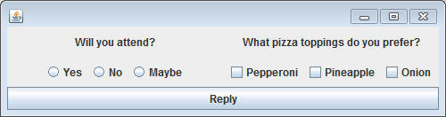
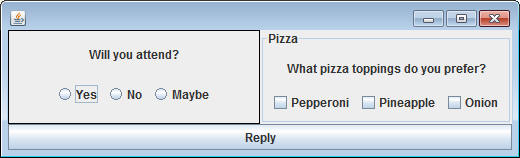
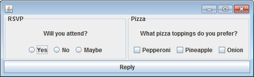
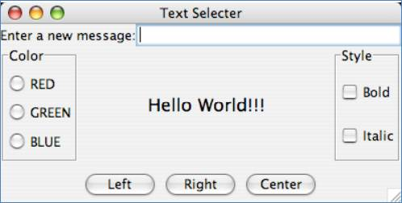

Another element that is commonly added to GUIs is the radio button or the check box. These are most often found when thre are multiple options to choose from.
Copy the following class to a new project.
import sacco.gui.*;
public class RSVP implements ButtonListener
{
private SFrame frame;
private SPanel attendPan, radioPan, pizzaPan,checkPan,center,south;
private SLabel attendLabel,pizzaLabel;
private SRadioButton yes,maybe,no;
private SCheckBox pep,pin,onion;
private SButton select;
public RSVP()
{
frame = new SFrame();
////////Attending Panel
radioPan = new SPanel();
attendLabel = new SLabel("Will you attend?");
yes = new SRadioButton("Yes");
maybe = new SRadioButton("Maybe");
no = new SRadioButton("No");
radioPan.add(yes);
radioPan.add(no);
radioPan.add(maybe);
attendPan = new SPanel();
attendPan.setLayout(new GridLayout(2,1));
attendPan.add(attendLabel);
attendPan.add(radioPan);
////////Pizza Panel
pizzaPan = new SPanel();
pizzaLabel = new SLabel("What pizza toppings do you prefer?");
pep = new SCheckBox("Pepperoni");
pin = new SCheckBox("Pineapple");
onion = new SCheckBox("Onion");
checkPan = new SPanel();
checkPan.add(pep);
checkPan.add(pin);
checkPan.add(onion);
pizzaPan.setLayout(new GridLayout(2,1));
pizzaPan.add(pizzaLabel);
pizzaPan.add(checkPan);
///////Adding to frame
center = new SPanel();
center.setLayout(new GridLayout(1,2));
center.add(attendPan);
center.add(pizzaPan);
frame.setLayout(new BorderLayout());
frame.add(BorderLayout.CENTER,center);
select = new SButton("Reply");
select.addButtonListener(this);
frame.add(BorderLayout.SOUTH, select);
frame.pack();
}
public void launch()
{
frame.setVisible(true);
}
public void onButtonPress(SButton source)
{
}
public static void main()
{
RSVP r = new RSVP();
r.launch();
}
}
There's a lot going on here. Run the main method and you should get the following:

The left panel has a group of SRadioButtons, while the right panel has a group of SCheckBoxes. You can click to turn them 'on' and 'off'. Essentially they are the exact same thing, they just draw themselves a little differently.
Panel Borders:
There are two panels here that are in different groups. The left is all about attending an event, while the right is about a choice of pizza toppings. There are two methods that belong to SPanel that are useful, the setBorder and the setTitledBorder methods. Add the following lines of code to the RSVP constructor.
attendPan.setBorder(true);
pizzaPan.setTitledBorder("Pizza");
These are simple borders that a panel can show to separate it from the rest of the GUI. One takes in a boolean because the border is either 'on' or 'off', while the other takes in a String that becomes the text of the titled border.

Personally I like the titled border more. Modify the code to get the following:

How to read a SRadioButton/SCheckBox
Both SRadioButton and SCheckBox have one important method:
public boolean isSelected()
Calling this method returns true if the radio button/check box is currently filled in. You can use this in if statements to help guide your decisions.
public void onButtonPress(SButton source)
{
String rsvp = "";
if( yes.isSelected() )
rsvp = "Yes";
if( no.isSelected() )
rsvp = "No";
if( maybe.isSelected() )
rsvp = "Maybe";
System.out.println("You have replied: "+rsvp);
}
When the button is pressed, an Empty String is created. Then a series of if statements are created to fill the variable with either yes, no, or maybe.
Run the program and test it out. Select an option on the left and hit the button. Hopefully it prints out an accurate statement.
Controlling what's selected using a ButtonGroup
This code has several problems. For example: If you select multiple options and hit the button you'll notice that it breaks down. If you think about the philosophy of this GUI. You should really only be able to select ONE of the buttons at a time. This is what the ButtonGroup object is for.
A ButtonGroup is not a visual object. Adding things to it will not cause them to appear on a panel in any way. Adding things to a ButtonGroup just makes sure that only one of its buttons are selected at a time.
At the end of the constructor add the following code:
ButtonGroup group = new ButtonGroup(); group.add(yes); group.add(no); group.add(maybe);
After this code, the yes,no, and maybe SRadioButtons are linked together. Run the program now and it only lets you select one of them at a time. This is what we wanted. The other checkboxes can be clicked as much as they want since they haven't been added to the Group
Assignment:
1) Modify the onButtonPress method of the program so that it generates a more complicated String. It should be in the following format:
You have replied: Yes
You preferred pizza topings are:
Pepperoni
Pineapple
Use if statements to make sure that the following happens:
- If the person replies No, don't even print out anything
about the pizza toppings.
- If no pizza toppings are selected, print "No Preference"
instead of a specific topping.
2) TextSelecter: Recreate the following GUI. The Color Radio Buttons should be in a ButtonGroup, but the Style CheckBoxes should not. There should be panels for the NORTH, SOUTH, EAST, and WEST, but not the center.

Function:
Everything on this GUI will modify the central label in some way.
Add a ButtonListener to the left, right, and center buttons. When those are clicked, align the central label to the left, right, or center. Hint: SLabel has methods alignLeft() alignRight() and alignCenter() that will be useful
Add a KeyListener that, every time a key is RELEASED, the text of the center label is set to whatever is in the field in the north panel.
Add a method with the following header:
public void updateFont()
This method's job is to look at the values of the red,green, and blue radiobuttons as well as the Bold and Italic checkboxes and updating the central label.
Use the red, green, and blue to construct a color object and to set the color to that.
You will also have to construct a new Font object and then call its setBold and setItalic method before setting the Font of the central label.
This method is not called automatically, but it is something that should be called both when a button is pressed and when a key is typed. Make it so that the very last thing that is in both the onButtonPress and onKeyRelease method is: this.updateFont(). This makes it so that you don't have to repeat code for both of those methods.